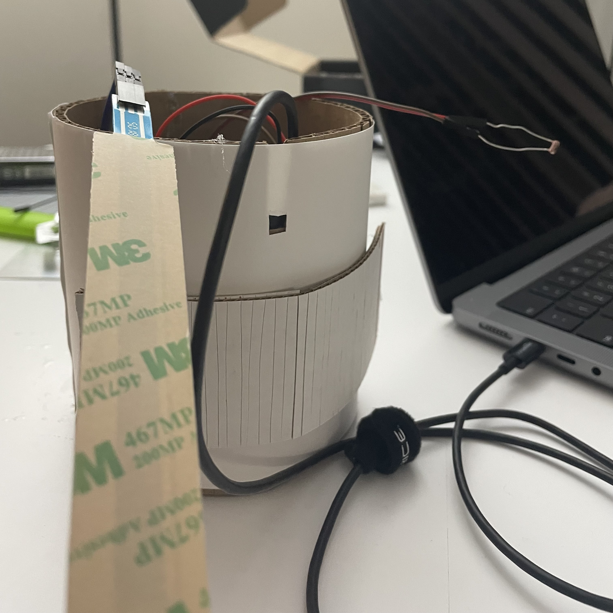
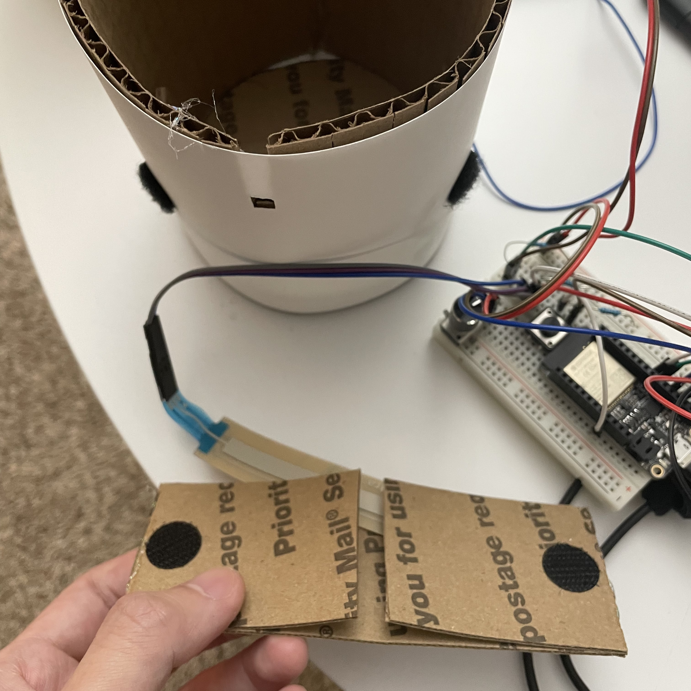
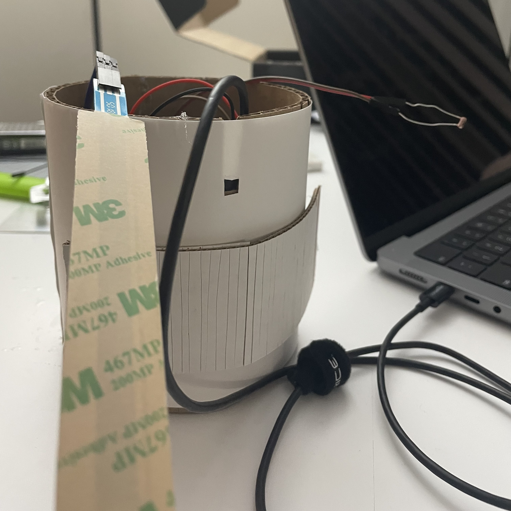
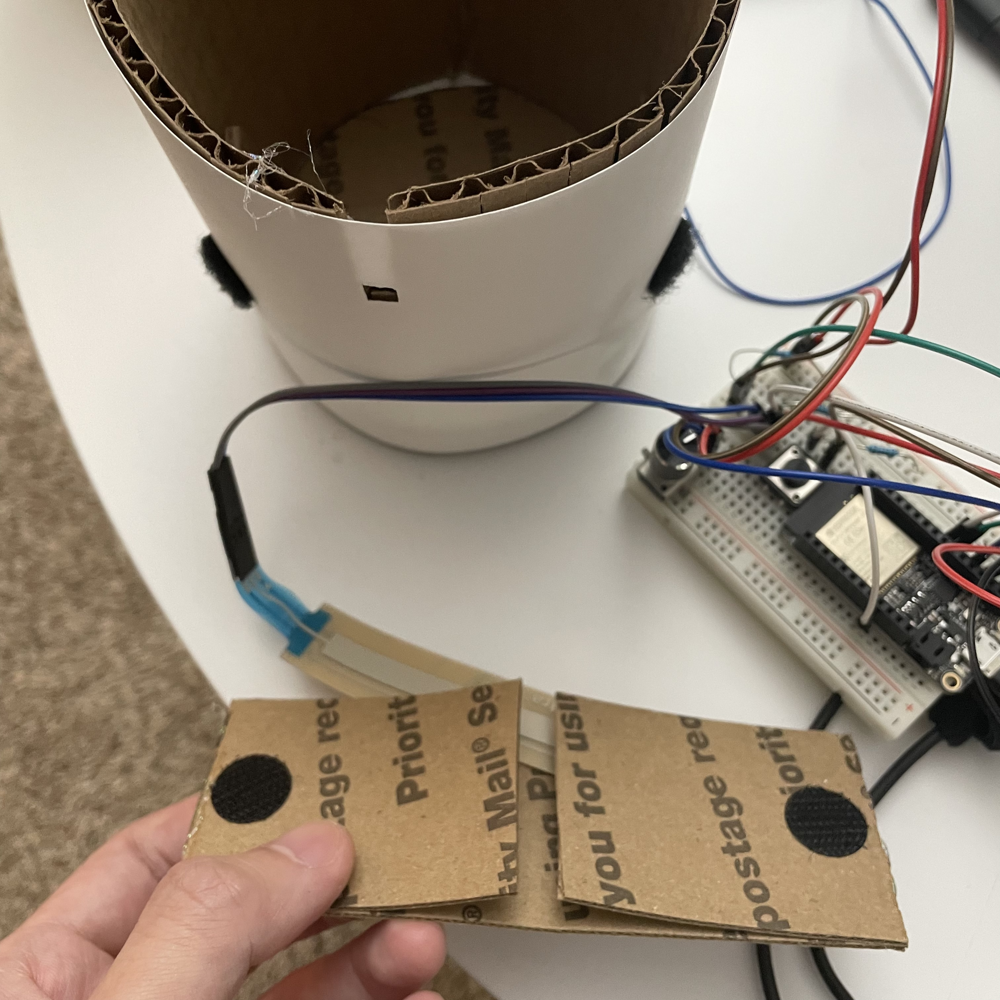

I want to make a simple music for personal use, and for the convenience of practice, it needs to be equipped with functions such as a metronome. The scale section can be operated with one hand, so you can play drums and beats with the other hand.
I added two sensors to the potentiometer and button. In it, I tried to make the photoresistor a kind of trigger mechanism for the metronome, and increasing the brightness can make the beat faster. And the bend sensor (since it's extremely sensitive) can be used as a touch sensor, pinching it to trigger the cymbal. Scales and pitches are controlled with keyboards and potentiometers using codes from the lesson.
At the same time, I also made a simple case, the bend sensor can be stored in another space, and left a space for the button to be pressed.

 


